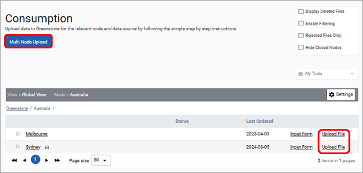
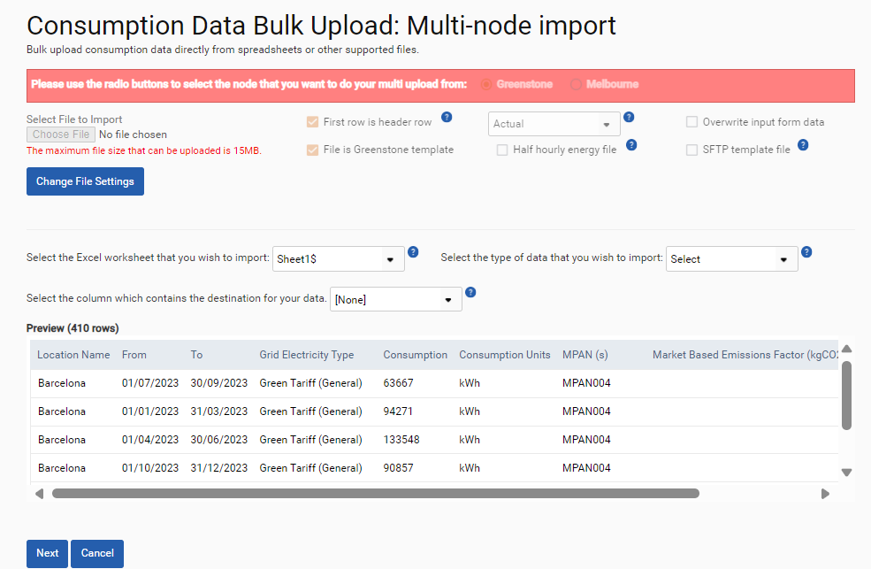
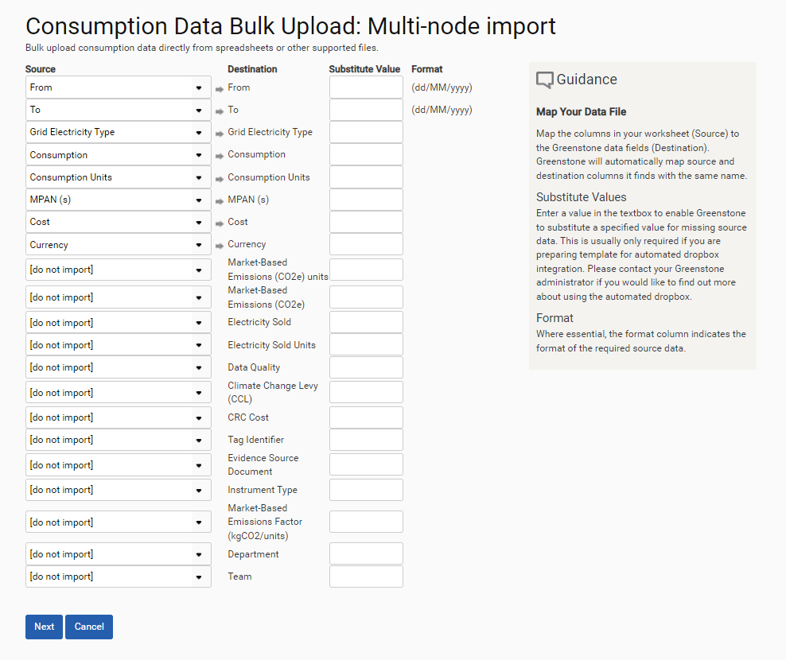
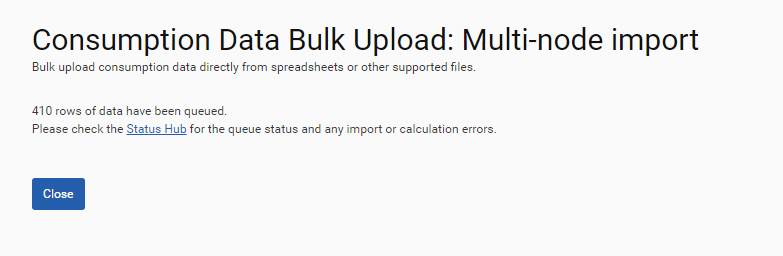

When multiple rows of data need to be uploaded to SPM, you can upload data in bulk using Excel and CSV files. Uploads can be made one consumption type at a time, for example a single upload for all fuel data sources and another upload for all electricity data sources. The easiest approach is to use the data templates provided by Cority. A different template is available for each consumption type.
To upload data in bulk select ‘Inputs > Consumption’ from the top menu bar. This will take you through to the table of nodes for which you have been given access. Select the view you would like to upload to using the settings button.
If your spreadsheet contains data for more than one location, select the ‘Multi Node Upload’ button at the top of the screen. If you are only loading data to a single location, click ‘Upload File’ from beside the node or data source. Clicking the ‘Upload File’ button will display the first of three steps in the upload process.

Step 1
Step 2
Confirming your file settings triggers 3 additional dropdowns and provides a preview of the data you are uploading.

Step 3 is only required if you are not uploading a Greenstone template or you are uploading an SFTP template.
Step 3
The next screen displays how the column headers in your upload should be mapped to the relevant data fields in SPM’s calculation engine. Ensure the column headers from your data file (on the left) match the destination headers (on the right). Columns with names that match those of the calculation engine will be mapped automatically. After confirming your mapping select the Next button.

If the data has been imported the screen below will appear. Please note, if there are any errors found in the upload, they will be displayed in the Status Hub. See the Status Hub section for details.

There is a limit of 25MB per file which can be input from a single file, this equates to approximately 5,000 rows of data in Excel. If your file has more rows than this, we suggest splitting your data into multiple files. If an upload fails before reaching the status hub it is likely this is because the file is too large.